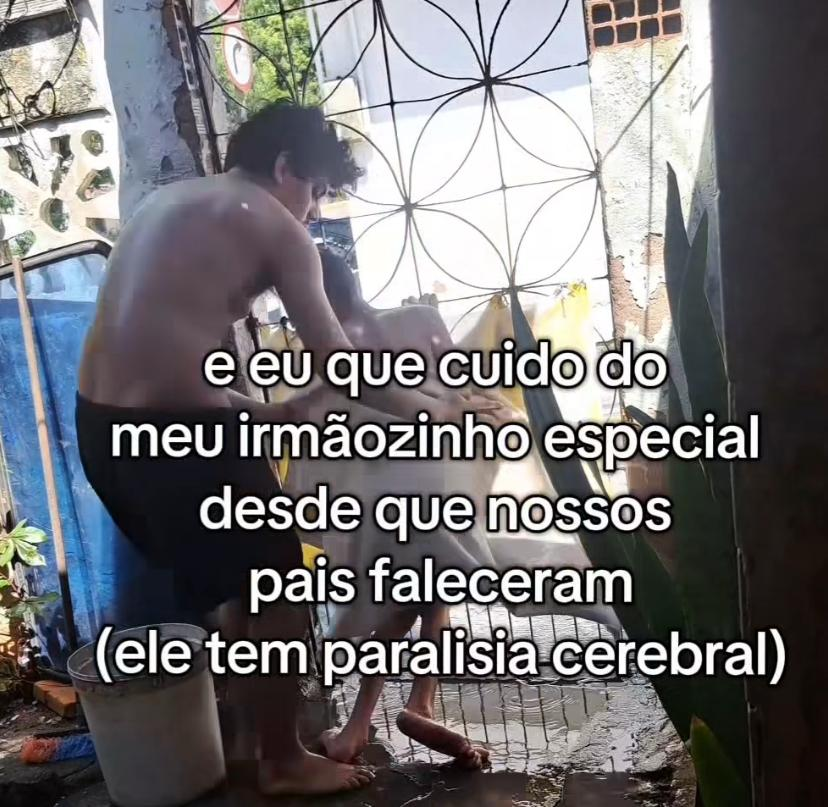
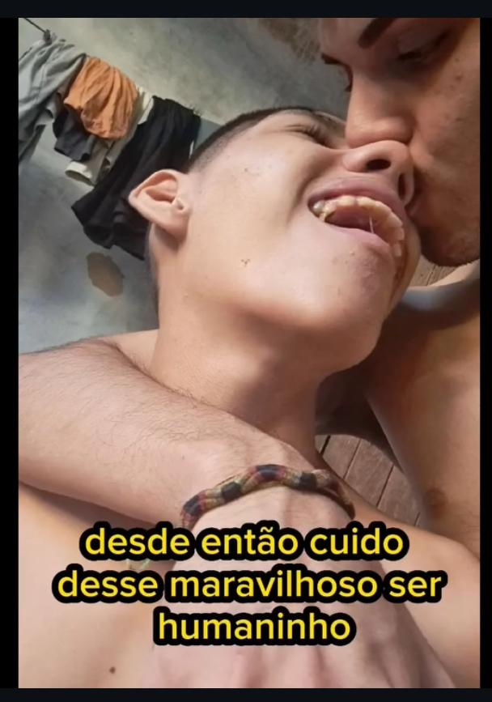

💔 Uma história de amor, perdas e esperança Ajude o Guilherme.
 117 corações recebidos ❤️
117 corações recebidos ❤️
Nossos Pais faleceram e nos vimos sozinhos contra o mundo
Nos últimos tempos, a vida nos desafiou de formas que eu nunca imaginei enfrentar tão jovem. Perdemos nosso pai, nossa mãe… e neste ano, também o nosso avô. Desde então, ficou só eu, o Gui e nosso tio para cuidar de tudo..
Guilherme é uma criança muito especial. Ele tem paralisia cerebral infantil e depende de cuidados 24 horas por dia — para comer, tomar banho, dormir, tudo. Além disso, sofre com crises e convulsões frequentes..
Desde que nos vimos sozinhos, faço o possível e o impossível para garantir ao Gui uma vida digna, mas confesso: está cada vez mais difícil.
Hoje estamos vivendo uma situação de desespero. Estou desempregado, com dívidas acumuladas, aluguel atrasado e muitas vezes sem dinheiro nem pra comida. As necessidades básicas do Gui — como fraldas, itens de higiene, alimentação adequada, medicamentos e transporte para consultas — muitas vezes simplesmente não cabem no que recebemos do governo..
"Tenho tentado sobreviver com pequenos trabalhos como caricaturista, mas é muito pouco diante de tudo o que precisamos."
São essas perguntas que me fazem chorar escondida no banheiro toda noite.
Já pensei em desistir… a tristeza e a ansiedade têm sido companheiras constantes. Mas quando olho pro meu irmão, lembro o porquê de estar aqui. Ele é minha motivação. Meu propósito. Eu nunca vou abandoná-lo..
Ser irmão dele não é fácil. Mas é o maior presente que já recebi na vida. O Gui me ensina sobre amor todos os dias — mesmo sem falar uma palavra.
Mas a verdade é que... a gente chegou num ponto crítico., Eu estou desempregado. As dívidas só aumentam. O aluguel está atrasado. Às vezes não temos nem o que comer. E as necessidades básicas do Gui — fraldas, leite especial, medicação, produtos de higiene — simplesmente não cabem no pouco que a gente recebe do governo..
Tento conseguir algum dinheiro como caricaturista, fazendo desenhos em festas, eventos ou por encomenda. Mas é muito, muito pouco.
Mas aí eu olho pro Guilherme... e lembro porque estou aqui. Ele depende de mim. E eu prometi a mim mesmo que, enquanto eu estiver vivo, ele nunca vai ser abandonado. Nunca.
Já pensei em desistir várias vezes. Às vezes a tristeza vem com tanta força que eu me pergunto se vou aguentar. Mas aí eu olho pro Guilherme... e lembro porque estou aqui. Ele depende de mim. E eu prometi a mim mesmo que, enquanto eu estiver vivo, ele nunca vai ser abandonado. Nunca.

É a mesma tecnologia usada por cirurgiões pra operar à distância, adaptada para devolver a independência a crianças como o Guilherme.
Se você está lendo isso agora, eu te peço com o coração aberto: nos ajude. Assista nosso vídeo. Veja com seus próprios olhos quem é o Guilherme, quem somos nós. E se puder doar qualquer valor, saiba que estará ajudando dois irmãos a continuar lutando juntos — com dignidade, com carinho, com esperança. Você pode ser a diferença entre a dor e o alívio. Entre o desespero e a esperança.
Você receberá:
● Atualizações semanais da nossa jornada
● Vídeo do primeiro abraço dele com a prótese
● Seu nome na nossa lista de anjos (se desejar)
Compartilhe nossa história. Cada compartilhamento é uma nova chance de devolver a infância ao meu filho.
Que Deus abençoe você e a sua família.
Att: Sandra, Mãe do Guilherme.